Návrat ku koreňom.
Agrokruh je revolučná poľnohospodárska inovácia, ktorá vďaka rotujúcemu ramenu šetrí až 70 % manuálnej práce. Automatizácia je k prírode a funguje bez chémie a ťažkej techniky.
Efektívne, bez chémie a ťažkej techniky. Agrokruh je revolučná technológia, ktorá automatizuje prácu na poli a je šetrná k prírode.
pNaša technológia pomáha predchádzať erózii pôdy, šetrí vodu, obnovuje prirodzený mikrobióm a podporuje biodiverzitu. Žiadne monokultúry – len zdravá, pestrá a živá pôda. Všetko vďaka jednému ramenu.
Prečítajte si viacModerným spôsobom pestovania človek ušetrí až 70 % manuálnej práce. Menej času stráveného na poli, viac priestoru na oddych či rozvoj farmy.
Automatizovaná technológia preberá väčšinu manuálnej práce. Zeleninu, bylinky aj kvety tak možno pestovať efektívne – s minimálnou námahou a maximálnou presnosťou. Menej driny a viac času na to podstatné.
Prečítajte si viacPodľa OSN máme už len 60 úrodných cyklov. Potom bude pôda vyčerpaná.Riešenie? Agrokruh. Technológia, ktorá pôdu regeneruje a uchováva jej úrodnosť.
Z pôdy berieme priveľa. Vďaka Agrokruhu jej vrátime, čo chýba. Regeneruje, oživuje, chráni a obnovuje prirodzenú rovnováhu. Nie silou, ale systémom, ktorý myslí na budúcnosť.
Prečítajte si viacAgrokruh zlepšuje štruktúru pôdy – až 70 % pôdnych agregátov dosahuje vysokú agronomickú hodnotu. Pri konvenčnom obrábaní je to len 45 %..
Otočné rameno vytvára podmienky, v ktorých sa pôda prirodzene zlepšuje – namiesto toho, aby sa ničila. Pôdne agregáty ostávajú pevné, pôda si drží vlhkosť a je pripravená dať plodinám maximum.
Prečítajte si viacNAŠA KOMUNITA
Pre lepšiu budúcnosť
Staňte sa partnerom 1.svg)


PRINCÍPY
Budúcnosť ma tvar kruhu
Naša misia
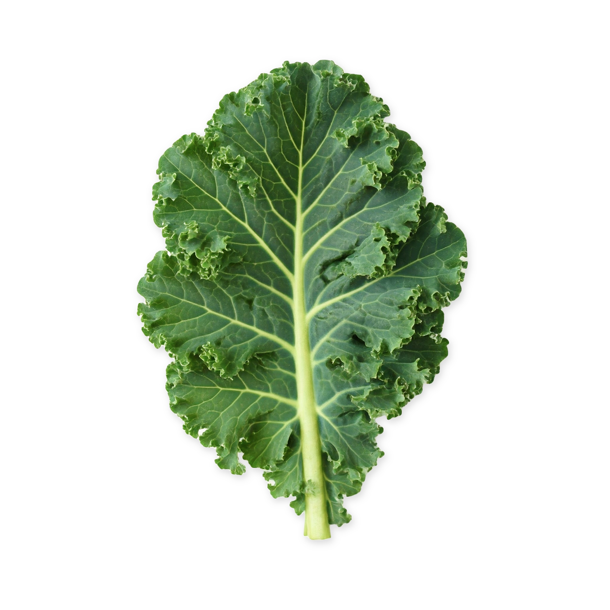
REGENERATÍVNE
UDRŽATEĽNÉ
ECOLOGICKE
Pestujte s technológiou, ktorá šetrí vás aj prírodu
Vďaka našej technológii si pestujete zeleninu, bylinky a kvety bez ťažkej techniky, chemických vstupov či ničenia pôdy. Agrokruh znamená viac života v pôde – a viac živín na tanieri.
ZISTIŤ VIAC

Jedno rameno, niekoľko funkcií. Naša technológia zvládne väčšinu poľnohospodárskych operácií. Všetko šetrne, efektívne a automatizovane.
Technológia obrába pôdu bez potreby traktora. Nenarušuje jej štruktúru, nezhutňuje ju a podporuje jej prirodzenú regeneráciu.
agrokruh
Revolúcia v poľnohospodárstve
„Ako lekárka viem, že nezáleží len na tom, aké potraviny konzumujeme, ale aj na tom, ako boli dopestované. Agrokruh umožňuje dopestovať plnohodnotnú výživnú zeleninu bez chemickej záťaže.“
Zmena nezačne sama od seba. Potrebuje slová, myšlienky a činy, ktoré ju posúvajú vpred. Píšeme o tom, čo má zmysel.
blog
Zuzana Vetešková Andreánska, AGROKRUH
Malí farmári, komunitné záhrady aj nadšenci domáceho pestovania nájdu v Agrokruhu spoľahlivého partnera. Začnite aj vy pestovať udržateľne a šetrne k pôde.
Premyslené riešenie pre menších pestovateľov. Agrokruh sa prispôsobí vašej pôde, tempu aj vízii. Aj malá farma vie priniesť veľkú úrodu.
malá farma
Malá farma, veľký potenciál
„Zelenina ako zdraviu prospešná a nenahraditeľná zložka výživy človeka nesmie byť pestovaná s použitím jedov, hrubej silya bezcitnej vypočítavosti.“
Pestovať bez chémie neznamená krok späť, ale návrat k tomu, čo dáva skutočný zmysel. Zmysel pre zdravie, prírodu aj budúcnosť.
Naša misia
Janko Šlinský, AGROKRUH
„Komunita ako zdraviu prospešná a nenahraditeľná zložka výživy človeka nesmie byť pestovaná s použitím jedov, hrubej silya bezcitnej vypočítavosti.“
Pestovať bez chémie neznamená krok späť, ale návrat k tomu, čo dáva skutočný zmysel. Zmysel pre zdravie, prírodu aj budúcnosť.
Nsašaa misia
Jankoo Šlinský, AGROKRUH
PESTOVANIE
50 plodín
Zoznam plodín
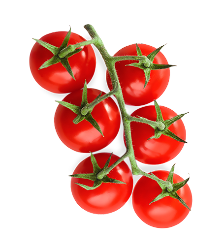
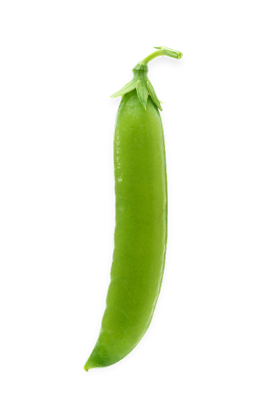
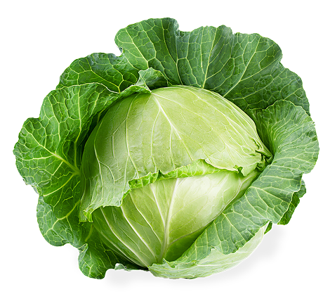
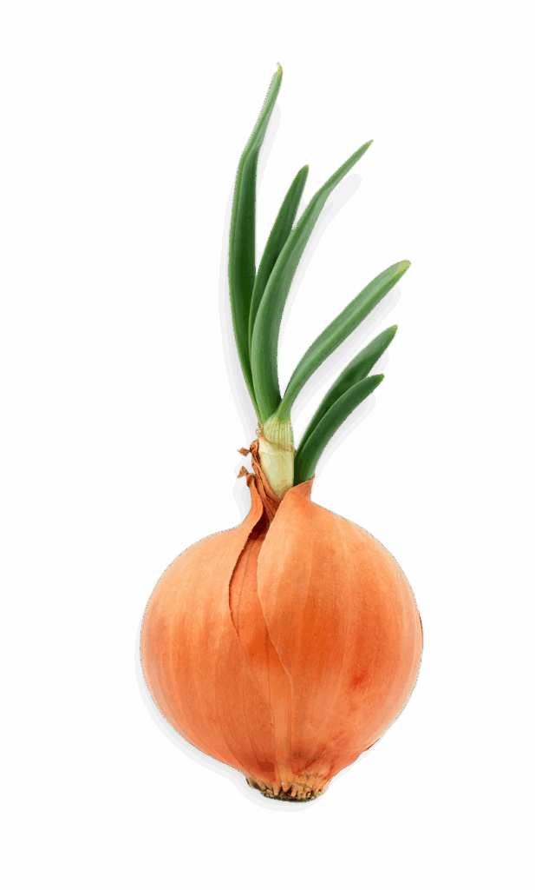
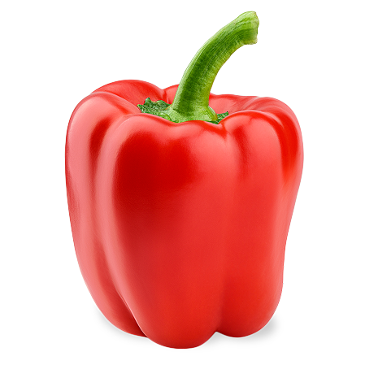
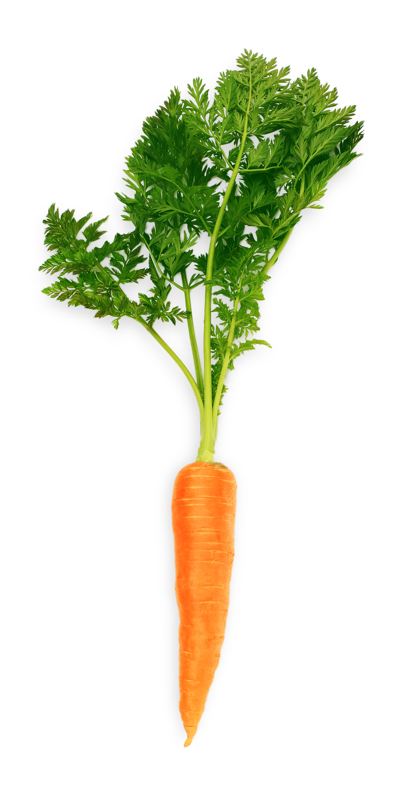
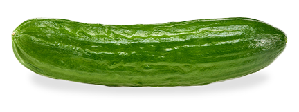
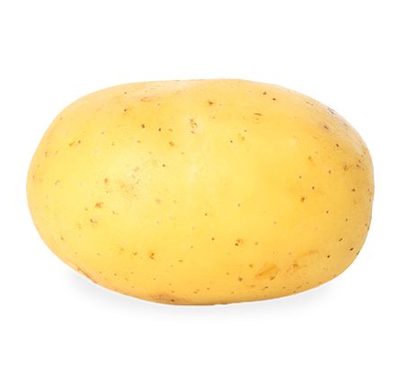
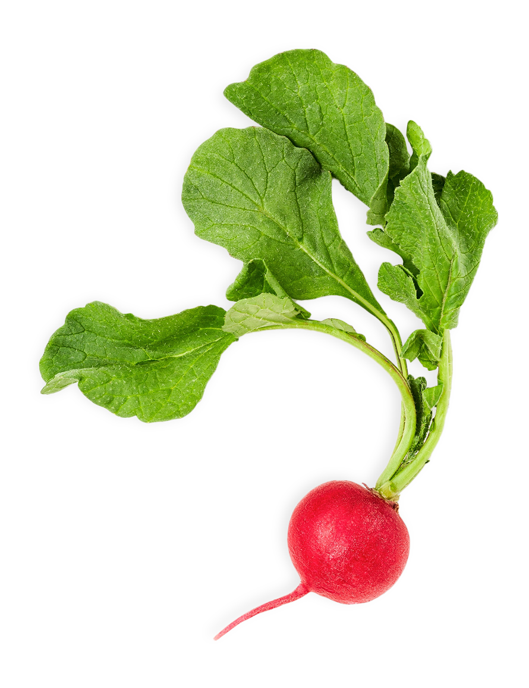
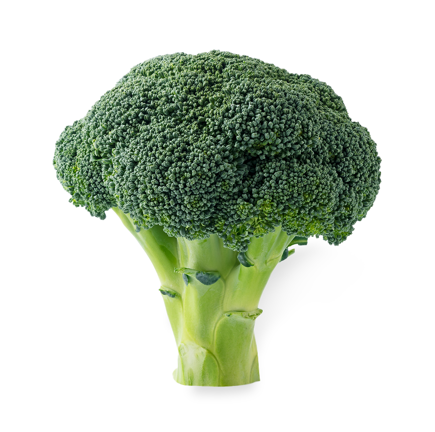
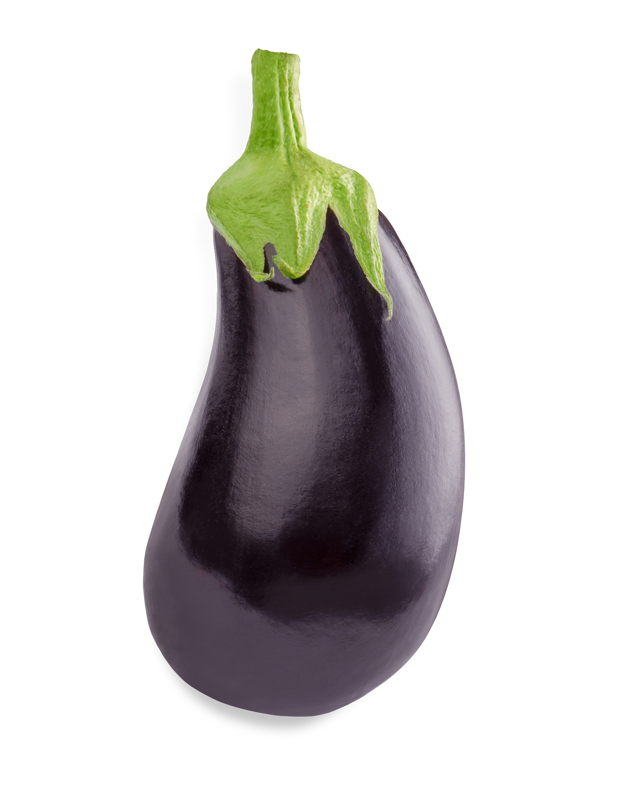
z pôdy
na tanier
Vypestujte si až 50 druhov chutí. Vaša úroda s Agrokruhom bude rásť v v súlade prírodou.
Zoznam plodínagrokruh
Veľká a Malá farma
Technológia, ktorá pestuje budúcnosť.
Vďaka Agrokruhu inovatívne vypestujete zeleninu, bylinky a kvety. A navyše – obnovujete pôdu, živíte komunitu a vraciate prírode to, čo jej patrí.